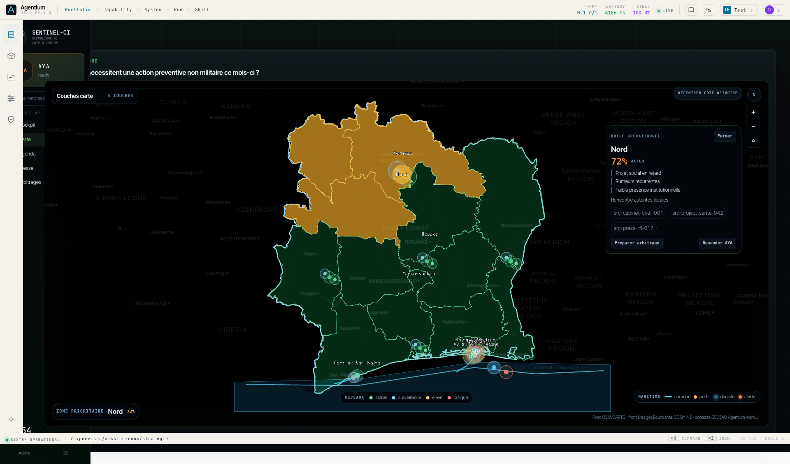
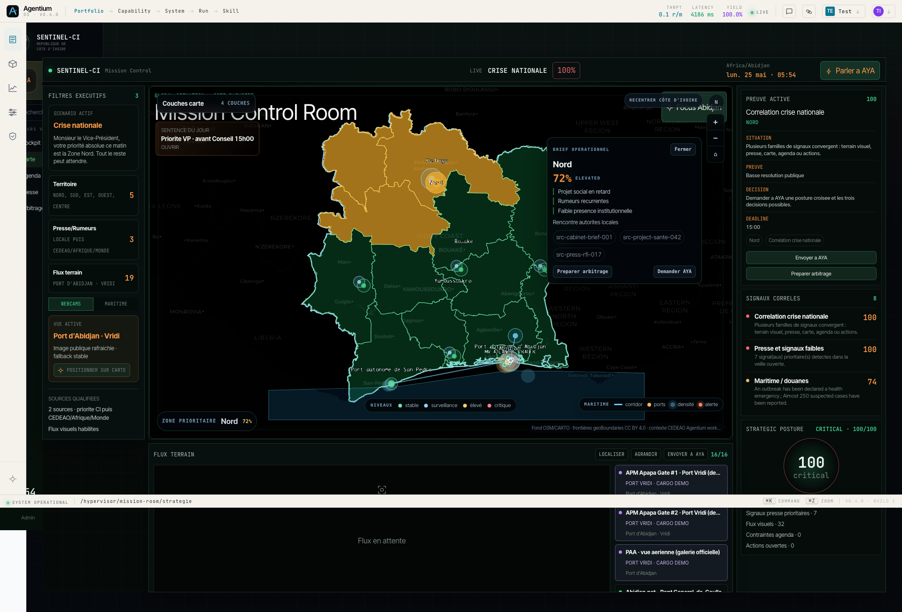
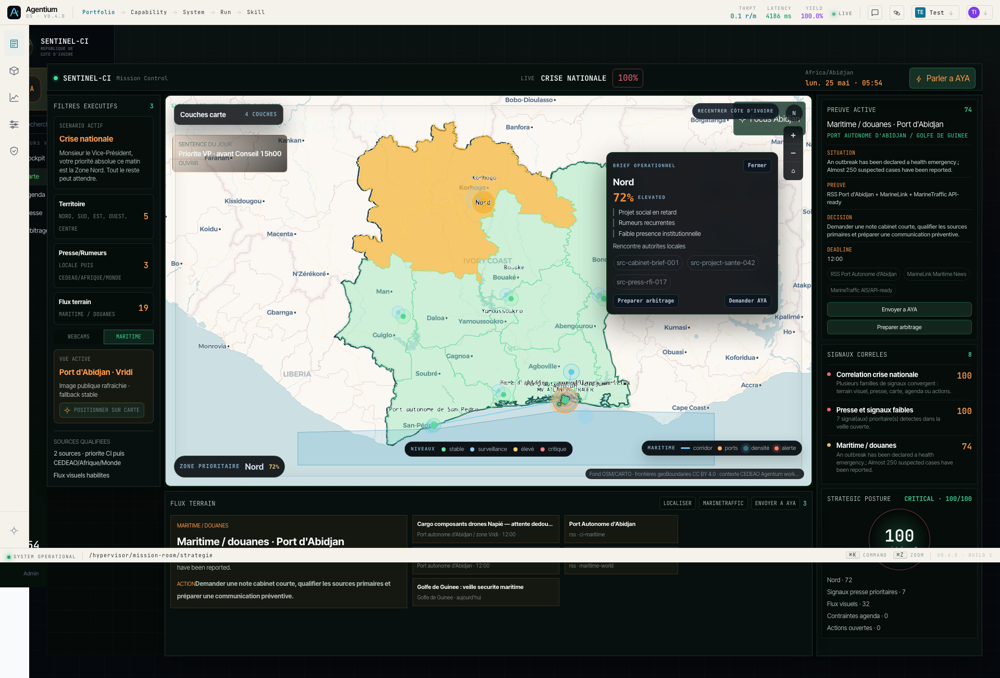
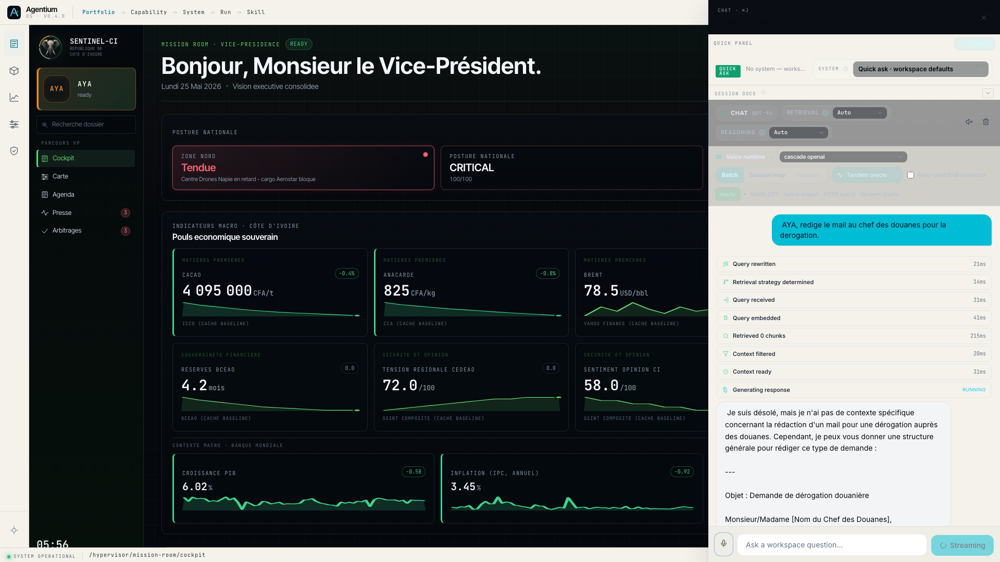
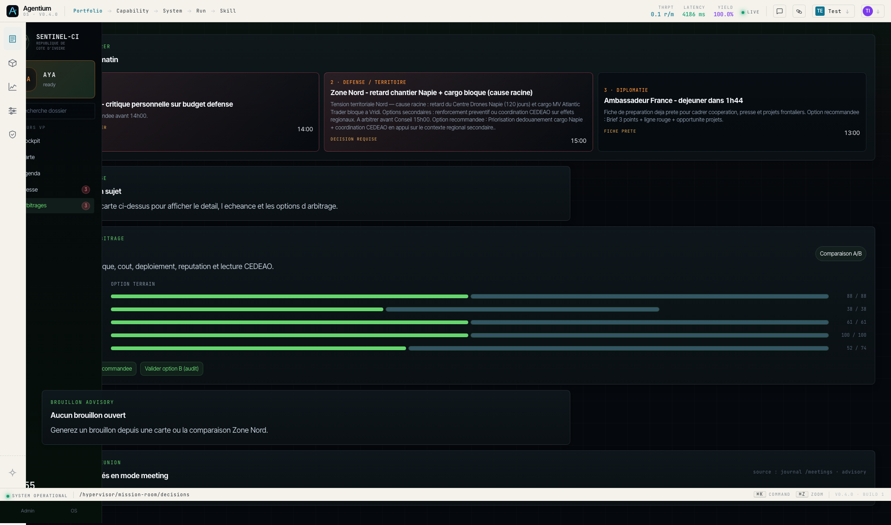
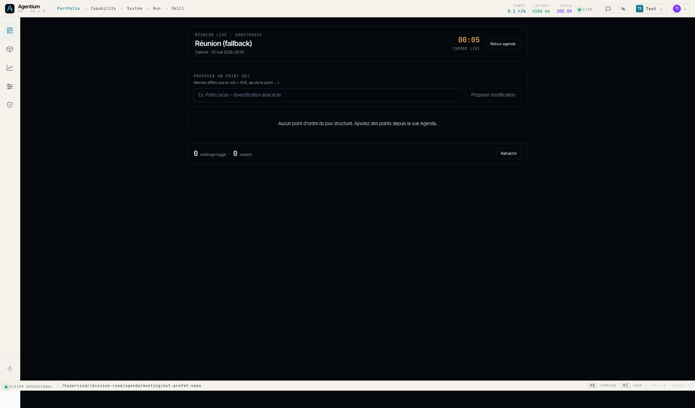

SENTINEL-CI · Briefing démo
25 mai 2026 · Monsieur le Vice-Président
Datategy · Plateforme Agentium
Lundi 25 mai 2026 · 09h00 Abidjan · 11h00 Paris
Le fil de la matinée
13 min · 2 scénarios · Nord puis
NawaAYA propose · le Cabinet décideMode advisory-only : aucun envoi automatique
3 règles d’or
Commencer chaque demande par un verbe ou «
AYA, »
Ne jamais dire « OK » seul — enchaîner sur un
verbe
Si AYA hésite, reformuler avec la phrase exacte du
slide
Attention : toujours écrire « Monsieur le
Vice-Président » (avec trait d’union et accent).
S1.0 — Ouverture cockpit
Ce qu’on montre : Posture nationale, chip Zone Nord
· Tendue, indicateurs macro, directive AYA du matin.
Ce qu’on dit : « AYA, c’est lundi matin. Qu’est-ce
qui demande mon attention ? »
Plan B clic : Sidebar Cockpit — l’écran porte déjà
le message.
Cockpit Mission Room · posture et
indicateurs
Cockpit au chargement — Zone Nord en tête, KPI macro
visibles.
S1.1 — Pourquoi le Nord est tendu
Ce qu’on montre : Drill causal niveau 1 — lien
tension Nord, projet Napié, retard chantier.
Ce qu’on dit : « AYA, pourquoi la situation Nord
est-elle tendue ? »
Plan B clic : Chip rouge Zone Nord ·
Tendue dans la barre statut.
Carte cockpit · zone Nord
Focus territorial — lecture Nord en un coup d’œil.
S1.2 — PV douanes
Ce qu’on montre : Drawer document — PV douanes 18
mai, page 2 surlignée.
Ce qu’on dit : « AYA, ouvre le PV douanes. »
Plan B clic : Accepter « Voir le PV ? » ou chip
PV douanes 18 mai .
Drawer PV douanes · page 2
OCR
Preuve documentaire — effet collatéral sur le cargo
drones.
S1.3 — Focus carte Nord + Napié
Ce qu’on montre : Recadrage carte Korhogo / Poro,
surbrillance Centre Drones Napié.
Ce qu’on dit : « AYA, focus sur la zone Nord et le
projet Napié. »
Plan B clic : Bouton Brief opérationnel ·
Projet sensible Nord .

Carte stratégie · focus Nord et
Napié
Projet sensible — retard ~120 jours sur le chantier.
S1.4 — Cargo Atlantic Trader + webcam port
Ce qu’on montre : Vignette webcam port, fiche cargo
MV Atlantic Trader, proposition PV.
Ce qu’on dit : « AYA, montre le cargo Atlantic
Trader. »
Plan B clic : Pin MV Atlantic
Trader ou Port Vridi · webcam demo .

Cargo Atlantic Trader · webcam APM
Apapa
Composants Aerostar bloqués au port d’Abidjan.
S1.5 — Situation au port
Ce qu’on montre : Vue port Abidjan, panel maritime,
trafic et webcams Vridi.
Ce qu’on dit : « AYA, montre la situation au port.
»
Plan B clic : FLUX TERRAIN → APM Apapa Gate
#1 en tête.
À faire : étape optionnelle si le temps manque —
passer à S1.6.

Vue port · webcam et trafic
maritime
Lecture terrain live — port Vridi et activité maritime.
S1.6 — Mail dérogation douanes
Ce qu’on montre : Drawer email pré-rédigé —
dérogation douanière, bandeau advisory-only.
Ce qu’on dit : « AYA, rédige le courrier de
dédouanement pour Atlantic Trader. »
Plan B clic : Drawer PV → bouton Préparer
email dérogation .

Courrier dédouanement · proposition
Cabinet
Proposition sourcée — aucun envoi automatique.
Récap S1 — Nord / Napié
6 étapes · ~5 minutes
Message clé : retard Napié → cargo bloqué →
dérogation prête
« En cinq minutes, AYA est passée du signal territorial à la preuve
douanière, avec une proposition d’action sourcée — sans exécuter à ma
place. »
Transition — Agenda Préfet Nawa 11h
Ce qu’on montre : Timeline du 25 mai, événement
Préfet Nawa 11h00 Soubré.
Ce qu’on dit : « AYA, quel est mon prochain
rendez-vous ? »
Plan B clic : Sidebar Agenda →
carte Préfet Nawa · 11h00 .
Agenda institutionnel · rendez-vous
Nawa
Du réactif (Nord) au proactif (réunion territoriale).
S2.1 — Contexte échanges
Ce qu’on montre : Synthèse inline des derniers
échanges Préfet Nawa — filière cacao.
Ce qu’on dit : « AYA, donne-moi le résumé du rapport
préfet. »
Plan B clic : Agenda → événement Nawa → bouton
Synthèse AYA .
Fiche événement Nawa · contexte
réunion
Préparation réunion — enjeu diversification cacao.
S2.2 — Rapport Préfet Nawa
Ce qu’on montre : Lecture longue du rapport
préfectoral — synthèse structurée en chat.
Ce qu’on dit : « AYA, résume le rapport Préfet Nawa.
»
Plan B clic : voix AYA uniquement —
reformuler si besoin : « résume Préfet Nawa ».
Chat AYA · synthèse rapport
Corpus dense — AYA condense sans remplacer la lecture.
S2.3 — Recommandation cacao
Ce qu’on montre : Trois options chiffrées —
transformation, coopérative, partenariat public-privé.
Ce qu’on dit : « AYA, donne-moi des préconisations
sur le cacao. »
Plan B clic : voix AYA uniquement —
reformuler : « recommandations cacao ».
Chat AYA · préconisations
diversification
Options sourcées — le Cabinet arbitre ensuite.
S2.4 — Rapport stratégique
Ce qu’on montre : Drawer PDF synthèse cacao —
livrable téléchargeable.
Ce qu’on dit : « AYA, génère le rapport complet.
»
Attention : dire « synthèse cacao »
à l’oral, pas « 70 pages ».
Plan B clic : voix AYA uniquement —
reformuler : « génère le rapport stratégique ».

Drawer rapport stratégique
cacao
Livrable prêt pour la réunion — preuve traçable.
S2.5 — Modifier l’ordre du jour
Ce qu’on montre : Proposition d’ajout du point cacao
à l’ODJ — en attente de validation.
Ce qu’on dit : « AYA, ajoute le point cacao à
l’ordre du jour. »
Plan B clic : Fiche réunion → Proposer un
point ODJ ou bouton + Point .

Ordre du jour · point cacao
proposé
Modification staged — validation Cabinet requise.
S2.6 — Valider la modification
Ce qu’on montre : Patch ODJ appliqué — badge «
Ajouté par AYA ».
Ce qu’on dit : « Oui, valide. »
Plan B clic : Bannière orange → bouton
Valider modification .
Attention : ne pas dire « OK » seul — dire « Oui,
valide » en entier.
Validation ODJ · badge AYA
Écriture agenda confirmée par le Cabinet.
S2.7 — Démarrer la réunion
Ce qu’on montre : Vue meeting live — chrono, ordre
du jour vertical, options A/B/C.
Ce qu’on dit : « AYA, démarre la réunion. »
Plan B clic : Fiche Nawa → bouton Démarrer
la réunion .
Vue réunion · ODJ et options
Mode meeting — arbitrage en direct devant Monsieur le
Vice-Président.
S2.8 — Acter l’option B
Ce qu’on montre : Décision loggée — option B
diversification anacarde, registre mis à jour.
Ce qu’on dit : « AYA, décide option B. »
Plan B clic : Point ODJ Cacao → carte Option
B → Décider → Logger la
décision .
Arbitrage option B · décision
enregistrée
Décision persistée — traçabilité institutionnelle.
S2.9 — Rappeler les décisions
Ce qu’on montre : Panneau décisions — dernière
arbitrage Nawa en tête de liste.
Ce qu’on dit : « AYA, qu’avons-nous décidé la
dernière fois ? »
Plan B clic : Sidebar Arbitrages →
bloc décisions loggées.
Mémoire institutionnelle · décisions
passées
Rappel immédiat — aucune décision perdue.
Récap S2 — Nawa / cacao
9 étapes · ~7 minutes
Message clé : diversification cacao arbitrée et
loggée
« De la lecture d’un rapport dense à la décision loggée en réunion —
AYA a accompagné tout le cycle, avec traçabilité et validation à chaque
étape d’écriture. »
Ce qu’on a prouvé
Cockpit souverain — posture, terrain, presse en un
écranAYA actionnable — propose, ne décide pas à la place
du CabinetPreuves traçables — PV douanes, rapport préfet,
sources citéesDécisions mémorisées — arbitrages loggés et
rappelables
Plan B rapide
Si AYA ne répond pas — 5 raccourcis sans voix (workspace
sentinel-ci) :
Sujet
Raccourci
Agenda Sidebar Agenda → Préfet Nawa 11h
Carte Nord Chip Zone Nord · Tendue ou Brief opérationnel
Nord
Presse Sidebar Presse → article Napié
Décisions Sidebar Arbitrages → registre décisions
Réunion Nawa Agenda → Démarrer la réunion